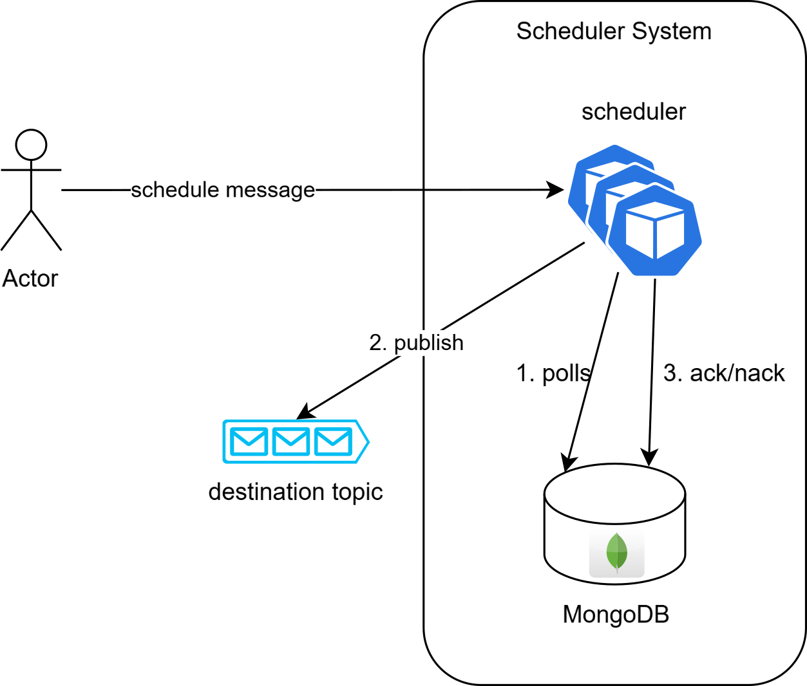
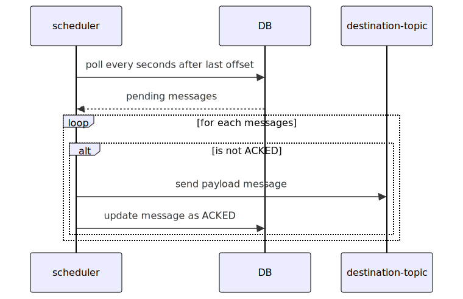

Design Distributed Scheduler - I
This article explores the design of a distributed scheduler optimized for scalability and fault tolerance. It covers key challenges like partitioning tasks, managing concurrency, and ensuring load distribution across multiple instances.

Having a distributed scheduler can be useful for orchestration purposes. For instance, it can be used to send a reminder after X minutes or enforce a workflow timeout (e.g., ensuring a payment is completed within Y minutes). However, designing a scheduler in a distributed environment is no trivial task, especially when aiming for high availability and scalability. This article explores the challenges and strategies for designing an efficient distributed scheduler.
In this design, I will focus primarily on the challenges of achieving scalability and high availability. To keep things straightforward, I will simplify the scheduler’s requirements. For example, it will not handle retries for failed jobs, nor will it deal with job-specific concepts. Instead, the scheduler will operate on an abstract level with messages or commands. These messages or commands can be executed by any worker, potentially even the same worker that requested the scheduling.
Use cases
For this system let’s assume the following use cases:
- user can schedule a message to be executed at given time
- user can cancel a scheduled message
- user can specify a channel (something similar to a kafka topic) where they want to receive the message
Essentially, the system will function like a delayed queue, where messages are delivered at a specified time. When a message’s time is up, the system will publish it to a real queue (e.g., Kafka, RabbitMQ).
Big picture architecture
The main idea is to create a scheduler service which reads pending messages at given time, submit to queue and then track it’s progress, like an offset. When a message is successfully delivered to destination topic then the scheduler update the message status (ack/nack).
Event the diagram shows multiple instance of scheduler service, this design start by exploring a solution based on single instance Scheduler and then starts by making some re-design to make system horizontally scalable.
Database
A robust database schema is a crucial element that directly impacts overall system performance. To optimize efficiency, we can start by splitting the read and write loads based on the system’s use cases.
It’s easy to see that the primary type of load on the database is “read”. The scheduler will periodically (e.g., every X minutes) query the pending scheduled messages to determine which ones need to be submitted immediately.
What about the write load? From the perspective of external actors, the system supports creating new scheduled messages or deleting existing ones. Internally, the scheduler also needs to update the status of messages once they are completed or have failed.
The key challenge is to design an efficient way to retrieve messages that are ready to be submitted. For this design, I’ll use MongoDB, a NoSQL database that enables easy scaling and partitioning of data.
Schema design
A database schema for NoSQL like database
{
"scheduleId": "...",
"destinationTopic": "...",
"executionTime": "date-time",
"payload": "scheduled command payload",
"status": "PENDING|DELIVERED|DELIVERY_FAILED"
}The schema is pretty simple with few fields:
payload: Contains the data for the scheduled job. This payload will be delivered to the queue.status: Tracks the schedule status. The default status isPENDING, whileDELIVEREDmeans the message has been sent to thedestinationTopic, andDELIVERY_FAILEDindicates a failure to deliver the message to the queue.executionTime: A timestamp, rounded to the nearest minute or second, based on the scheduler’s granularity.destinationTopic: Specifies the topic where the scheduler will publish the message. This could be a Kafka topic or a RabbitMQ routing key.
Storing Offset and Execution Time
In addition to the main scheduler collection, the system will have a dedicated collection to store the offset and the last executionTime. This will allow the scheduler to track the progress of scheduled messages more effectively.
The structure of this collection could look like this:
{
"lastExecutionTime": "date-time"
}Where:
lastTaskId: A unique identifier for the task being tracked.lastExecutionTime: The last time the task was executed, helping to track the progress and avoid redundant processing.
Optimize queries
The most important aspect is query optimization, as these will be performed periodically by the scheduler. The challenge is to efficiently retrieve the next messages to be sent. Example of SQL-like query to retrieve messages for next execution time. e.g. current executionTime > 2024/09/25T12:50:00Z AND executionTime < 2024/09/25T12:50:00Z
SELECT * FROM schedules
WHERE executionTime > {lastExecutionTime}
AND executionTime < "2024/09/25T12:50:01Z" Why use a range query? It makes handling issues related to timestamp precision or small variations in service processing easier, especially in failure scenarios.
Without a proper data partition strategy, this query could result in a full scan of all shards. For example, if using scheduleId as the shard key, running this query would span multiple partitions. To optimize the search query, a better shard key would be executionTime. This approach allows the query to be answered by exploring a single shard or a reduced number of shards. In MongoDB, this type of shard key is called a Range Shard Key. MongoDB automatically splits the data space into multiple ranges and redirects the request to the most appropriate shard or set of shards. From an abstract point of view, it’s as if we are grouping all jobs with the same scheduling date into the same group.
The second operation involves updating the message status to either DELIVERED or DELIVERY_FAILED.
This operation will use scheduleId as the unique identifier. However, if we only use executionTime as the shard key,
the write operation may lead to a scatter-gather query, which can reduce efficiency.
To improve performance, we can create a composite shard key by combining two keys.
This allows for more efficient updates by directing the operation to a specific shard.
db.shardCollection("messages", {executionTime: 1, scheduleId: 1})With this composite shard key, the MongoDB query planner will target a single shard for each operation,
improving the performance and efficiency of writes. The first state in the query planner would be SINGLE_SHARD,
meaning the query no longer needs to perform a scatter-gather across multiple shards.
Dealing with Skewed Partitions and Hotspotting
What happens if many jobs are scheduled at the same time? It depends on the granularity of the executionTime (e.g., rounding the timestamp to the second or minute), but it could lead to skewed partitions. MongoDB also faces issues with Monotonic Increasing Keys, like timestamps, which can cause shard hotspotting. This happens when new data constantly gets routed to the same shard due to a sequence of timestamps being close to each other. Over time, this leads to uneven load distribution and potential performance bottlenecks. We will address how to resolve this issue in the next section when discussing the scheduler-service.
Design Scheduler service
In this first scheduler design, it’s behaviour is quite simple.
- polling every minute/second for messages with
scheduledTimeafter last offeset - check if message is
PENDING - send a message to queue with payload
- update job status based on queue’s publish outcome
- checkpoint the offset by updating document.
Optionally: To improve performance and reduce writes to the database, checkpointing can be performed every X seconds. The downside of this approach is that the service could crash without writing its last checkpoint. When the service restarts, it will re-read the previous batch of messages, but it won’t produce duplicate messages due to the message status field.
Obviously, the polling frequency determines the scheduler’s granularity. For now, let’s assume second-level granularity, even though this implies a lot of queries to the database. In subsequent designs, I will explore ways to improve the system and reduce unnecessary queries (spoiler: using an actor-like approach and caching).
The system seems ready for implementation, but what about horizontal scalability? If I want to run multiple instances of the scheduler, this could lead to concurrency issues. For example, two different instances might try to poll the same jobs and send the same events. Additionally, there is no load distribution between instances!
Re-Design: Make it scalable!
Let’s make a little bit of redesign to address some issues:
- High load for single worker when there are a lot of scheduled job at same second
- The scheduler service cannot properly scale horizontally. Increasing instances doesn’t distribute the load.
- The scheduler service is a single point of failure.
The goal is to distribute the load at the application level. For example, if you have 10,000 jobs scheduled at the same time, we can split them into 10,000 / number of instances. This way, each service will handle a different partition and poll only for its assigned partitions.
Database
At the database schema level, we need to introduce a new field: bucket.
Each bucket can contain multiple scheduled messages at the same second. Suppose we define a total number of buckets (e.g. 20),
this means that messages scheduled at the same time can potentially be processed by a maximum of 20 parallel instances.
So, the number of buckets is a hyperparameter that should be fine-tuned based on load expectations, something
similar to the number of partitions in a Kafka topic.
So extend the schema in the following way:
{
"scheduleId": "...",
"executionTime": "date-time",
"bucket": 1,
"payload": "scheduled command payload",
"status": "PENDING|DELIVERED|DELIVERY_FAILED"
}We can leverage the combination of executionTime and bucket as a composite shard key to improve and parallelize
reads across multiple instances. Messages scheduled at the same time and in the same bucket will be colocated
in the same MongoDB partition, which helps reduce partition skew for jobs scheduled at identical times.
However, the MongoDB monotonic timestamp issue still persists. To mitigate this,
using bucket as the shard key prefix (the first part of the composite key) can help reduce the negative effects
of a monotonic timestamp:
db.shardCollection("messages", {bucket: "hashed", executionTime: 1, scheduleId: 1})Even though bucket is a low-cardinality key, its combination with executionTime (which is a high-cardinality and monotonic key)
and scheduleId (also a high-cardinality key) gives MongoDB enough information to effectively split the shards without issues. Additionally,
using a “hashed” bucket ensures event data distribution across shards, thereby avoiding hotspotting.
Now the query to retrieve next scheduled messages looks like the following one:
SELECT * FROM schedules
WHERE bucket = {schedulerInstanceAssignedBucket} AND
WHERE executionTime > {lastExecutionTime}
AND executionTime < "2024/09/25T12:50:01Z"Scheduler Service
The re-design of scheduler service is not trivial, the idea is to split workload among multiple instances. For example, fixed max of buckets to 20 and 4 scheduler instances, each scheduler should work on a specific assigned partitions. The first one will handle the first 5 buckets, the second one from the second 5 buckets and so on.
But what happens when a node fails? Or a new one is scaled-out? In such scenarios, the system requires rebalancing to ensure an even distribution of workloads. This calls for a coordination mechanism and cluster awareness to dynamically reassign buckets among the available nodes.
Clustering
Typically, clusters involve member discovery and failure detection to update each instance’s local knowledge about the cluster. By knowing the cluster membership and the fixed bucket size, it becomes possible to assign (or self-assign) a set of partitions. Many techniques and technologies enable cluster formation and facilitate information sharing among members to split up partitions. For example:
- Relying on Leader Election: Using consensus algorithms like Raft or Paxos, a leader is elected to assign partitions.
- Zookeeper: Provides coordination and partition management.
- Distributed Maps: High-level abstractions over consensus algorithms, like Hazelcast, that allow shared state and partition assignment.
Another alternative - one I will explore and implement in the next article - is to use a cluster membership protocol combined with consistent hashing (hash ring).
- The membership protocol is responsible for detecting members in-out and node failures.
- The hash ring tracks active nodes on a logical ring and enables nodes to self-establish their own partitions. Additionally, the hash ring minimizes the number of partitions re-assignment during a rebalance.
Consistent Hashing is an elegant solution for balancing workloads in distributed systems and will be a core component of the next design.
During scale-out, scale-in, or node failure, cluster members may temporarily see different member counts, leading to partition ownership overlap. To address this, the scheduler will rely on a persistence layer to acquire a partition lock with fencing.
These aspects, along with more details about application-level partitioning, hash rings, and membership protocols, will be deeply covered in the second part of “Designing a Distributed Scheduler”.
Message bucket assignment
How do we assign a bucket to a message? It’s straightforward: by using a hash function or a round-robin policy. For a hash-based approach, the assignment can be determined as follows:
hash(scheduleId) % bucketsWhere scheduleId is a unique identifier, such as a UUID.
While the hash function should be well-distributed, like MurMur3 (commonly used in Kafka).
This approach ensures that, given a specific scheduleId, the target bucket can always be determined consistently. As a result, updating the message status can be optimized, avoiding scatter-gather queries in MongoDB.
The system effectively employs two layers of sharding:
- Scheduler-To-Bucket: Each worker is mapped inside a hash ring and is responsible for its assigned buckets.
- Message-To-Bucket: Each message is assigned to a specific bucket based on the hash function.
What’s Next?
This article introduced the foundational design for a scalable, distributed scheduler. While we explored key concepts such as bucket-based sharding, partition ownership, and cluster coordination, there’s still more to uncover.
In the next article, I’ll delve deeper into:
- Cluster membership and Hash Rings: Used to establish partition ownership to self-distribute workloads across nodes.
- Partition Locking with Fencing Tokens: Approach to prevent ownership overlaps during transient states like scale-in, scale-out, or node failures.
- Polling: Optimization to reduce every second polling on database.